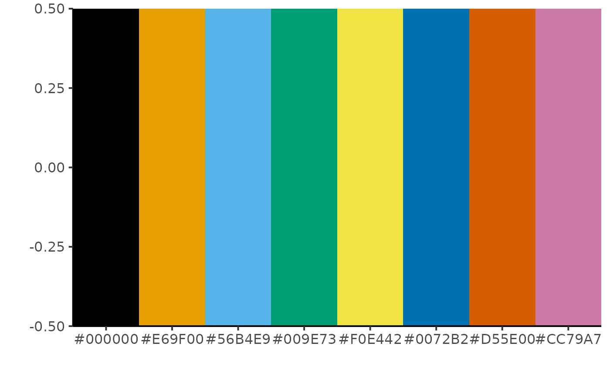

Shortcut for c("#000000", "#E69F00", "#56B4E9", "#009E73", "#F0E442", "#0072B2", "#D55E00", "#CC79A7").
cbbPaletteAn object of class character of length 8.
library(ggplot2)
library(dplyr)
#>
#> Attaching package: ‘dplyr’
#> The following objects are masked from ‘package:stats’:
#>
#> filter, lag
#> The following objects are masked from ‘package:base’:
#>
#> intersect, setdiff, setequal, union
df <- data.frame(palette = HuraultMisc::cbbPalette) %>%
mutate(palette = factor(palette, levels = palette))
ggplot(data = df, aes(x = palette, fill = palette, y = 0)) +
geom_tile() +
scale_fill_manual(values = levels(df$palette)) +
coord_cartesian(expand = FALSE) +
labs(x = "", y = "") +
theme_classic(base_size = 15) +
theme(legend.position = "none")
